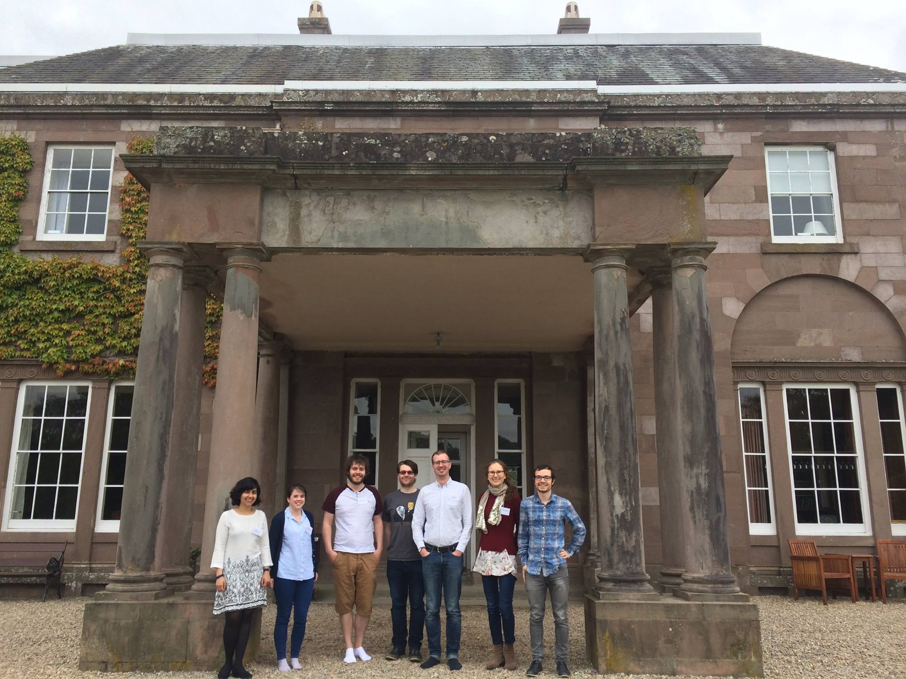

These are some of the talks I gave during my time as a PhD student.
2020
Enumerating binary matrices with all rows and columns distinct up to permutations of rows and columns School of Mathematics and Statistics Research Day, 23 January 2020. Slides
2019
Counting finite congruence free semigroups
Abstract: A congruence free semigroup has only two congruences - the universal congruence and the trivial congruence. A finite semigroup which is congruence free either be a simple group or a 0-simple semigroup with all subgroups trivial. The latter corresponds to binary matrices with all rows unique and all columns unique via the correspondence with Rees 0-matrix semigroups. I will demonstrate a method to count the isomorphism classes of these semigroups, which corresponds with counting these matrices up to permutations of the rows and columns.
Algebra and Combinatorics Seminar, 27th February 2019. Slides
Enumerating Rees 0-matrix semigroups Pure Postgraduate Seminar, 2019 Slides
2018
Counting congruence free semigroups
Abstract: I will introduce Polya enumeration theory and given some insight into how it can be used together with the inclusion-exclusion principle to tackle the problem of counting the congruence free semigroups up to isomorphism.
Pure Postgraduate Seminar, 13th November 2018.
Creating a database of 0-simple semigroups
Abstract: 0-simple semigroups are in some sense the building blocks of semigroups. Enumerating these semigroups up to isomorphism boils down to finding certain matrices up to a special equivalence relation. I will explain how I created a database of these for orders < 49, focusing on the strategies that allowed me to compute to higher orders.
Algebra and Combinatorics Seminar, 18th April 2018. Slides
2017
Inverse Semigroups
Abstract: In this talk I will define inverse semigroups and discuss
some important tools for their study. I will also show some of the ways
computational algebra system GAP can be used in research.
Edinburgh Mathematical Society Postgraduate Meeting for Students 2017,
The Burn, Edzell, Jun 07, 2017 - Jun 09, 2017. Slides
E-unitary inverse semigroups in GAP
Abstract: The class of E-unitary inverse semigroups is an important
one in inverse semigroup theory due to McAlister’s covering theorem
which states that every inverse semigroup is an idempotent-separating
homomorphic image of an E-unitary inverse semigroup. The structure of
these semigroups is more easily understood when they are represented as
McAlister triple semigroups. I have spent some time implementing these
objects into the Semigroups package of GAP and I aim to provide an
overview of what they are, the work I have done and my future plans.
Algebra and Combinatorics Seminar, 10th May 2017. Slides
2016
Primitive Permutation Groups
Abstract:
This talk will introduce primitive permutation groups and
attempt to justify the statement 'primitive permutation groups are the
building blocks of all permutation groups'.
Pure Postraduate Seminar, University St Andrews, November 17th 2016.

Standing outside The Burn with the other St Andrews students
during the Edinburgh Mathematical Society Postgraduate Meeting 2017.